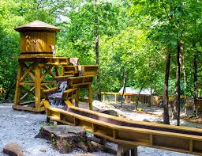
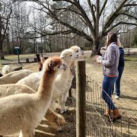

Top Attractions
T.W. Briscoe Park

T.W. Briscoe Park is a large community park offering extensive recreational facilities, including sports fields, playgrounds, an outdoor pool, and a walking trail around a lake.
Yellow River Wildlife Sanctuary
Yellow River Wildlife Sanctuary provides visitors with an opportunity to observe and interact with various native and exotic animals, including a bison herd, peacocks, and wallabies.
Creekwater Alpaca Farm
Creekwater Alpaca Farm offers unique tours where guests can get up close with alpacas, bunnies, and goats in a peaceful farm setting.